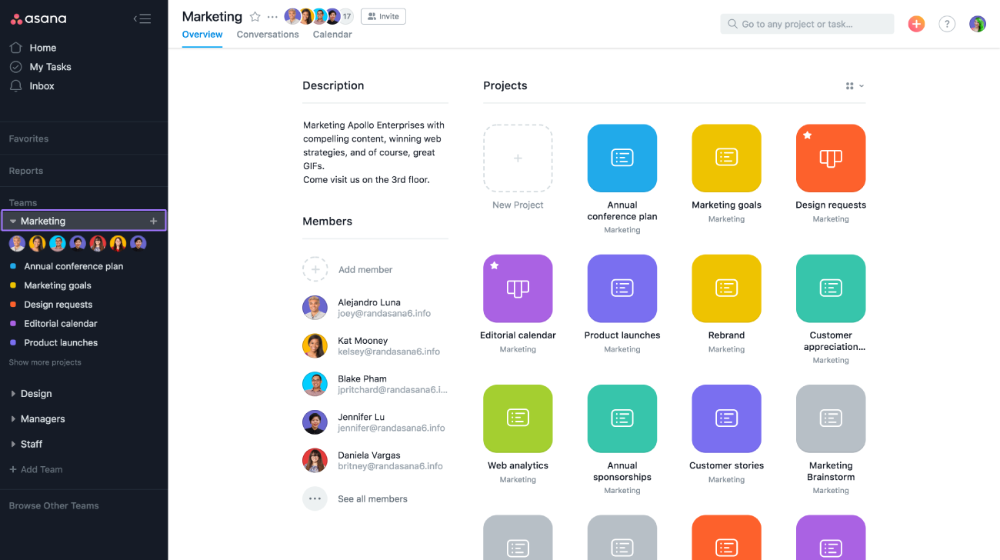

By Amulya Uppala
Oct 23, 2018
Finding the information you need, when you need it can be time-consuming. Especially when work is happening in many places like email threads, chat messages, check-in meetings, and shared docs. And when you’re working on multiple projects at once and trying to stay on top of deadlines, it can quickly become overwhelming.
“Homepage helps our team focus on their most important projects by putting them front and center. We can easily find what we need, helping us run more efficiently and deliver better service to our clients.” – Brian Tracy, Cotter Consulting
With your new Homepage and improved team pages in Asana, you easily find the work that matters to you so you don’t waste time searching for it. These pages were created to help you easily access the information you need to do your work and stay in sync with your team members from the moment you open Asana.
Now when you log in to Asana, you’ll be greeted by your personalized Homepage. It gives you an easily accessible view of all your favorite and recently viewed projects so you can quickly get to the work that matters to you. When you hover over a project tile on your Homepage, you’ll see the project’s members, which team it’s a part of, and its privacy setting. To get back to your Homepage at any time, just click Home in the sidebar on the left of your screen.
“The new Homepage brings clarity to my team. Not only is it a really refined look, but it is now easier to access the last used projects. We can all easily find what we need, helping our team run more efficiently and reducing communication issues to let us focus on our core business” – Sébastien Lévesque, Confab Laboratories
Quickly accessing the projects you care about is just the beginning for Homepage. Our team will continue to add more functionality in the coming months so it becomes your go-to destination for seeing the work that matters to you most—such as the tasks you need to focus on and relevant activity updates.
Now when you visit a team page in Asana, such as Marketing, you’ll get more context about thepurpose of the team , who’s in it, and what they’re working on. The Overview tab shows you a description of the team, giving everyone a better understanding of what this team is and what they’re focused on. It also lists all of the members in the team and projects your teammates are working on. You can click into the conversations tab of your Team Page to scroll through recent discussions on different projects within your team and quickly get caught up to speed.
Now when you invite a new teammate to your Team in Asana, they’ll see the updated team page so they can easily get the context they need to start working in Asana. To navigate back to a team page, scroll down your sidebar into the Teams section and click on the name of the team you want to access.
Starting today, all Asana users have access to Homepage and our new team pages, so you can get time back in your day to focus on the work that matters. Over the coming months, we’ll continue to add to Homepage to make sure it provides maximum value to you and your team. Visit Asana to start using the new Homepage and improved team page today.
Special thanks to Christy Hecht, Zach Miller, Jocey Karlan, Audriana Vojkovich-Bombard, Dean Rzonca, Josh Smith, Denise Irvin, Paul Velleux, Yujian Yao, Christa Simon
Comments: